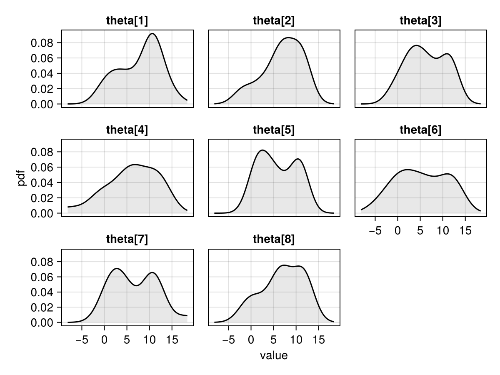
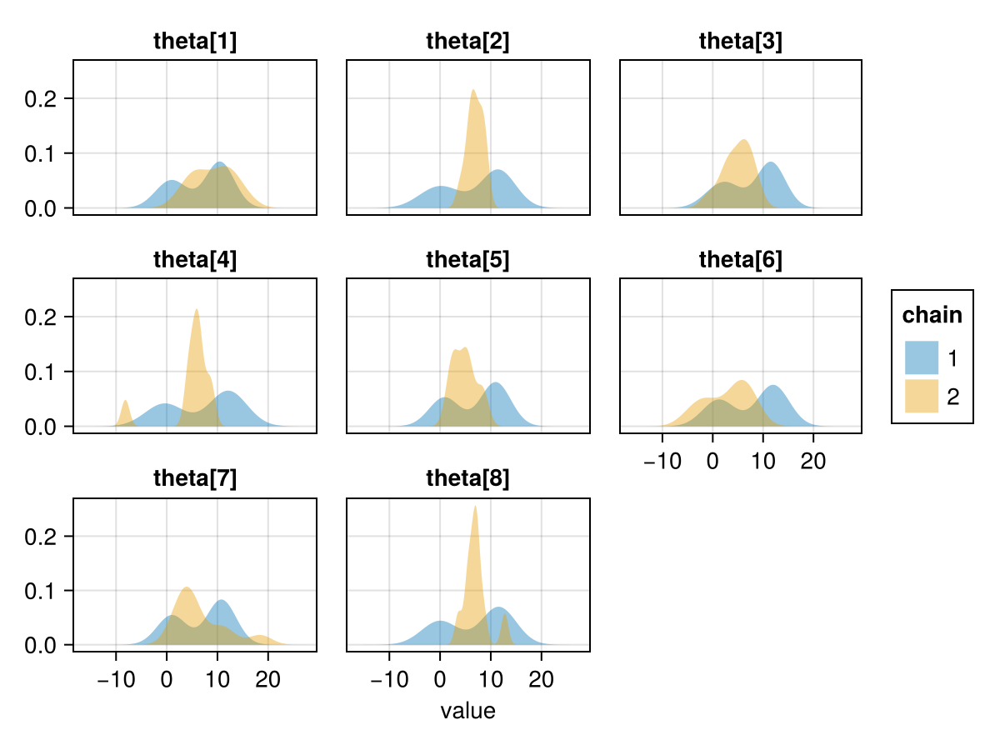
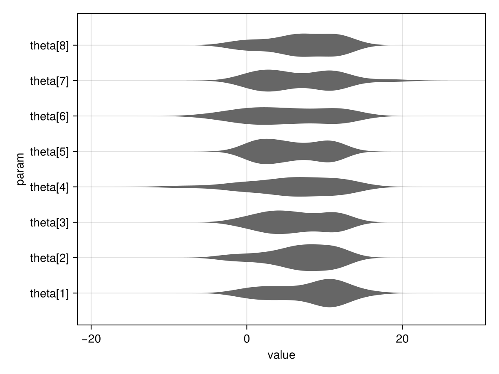

AlgebraOfGraphics.jl
Documentation for AlgebraOfGraphics.jl ↗
AlgebraOfGraphics.jl (AoG) is a plotting package built on top of Makie, which provides a declarative interface for plotting, much like R's ggplot2.
FlexiChains does not provide any direct functionality to work with AoG. However, since FlexiChains provides a Tables.jl interface, it can be fed into AoG for plotting. This page provides a handful of examples, using our now familiar demonstration chain:
using FlexiChainschain = FlexiChains.EXAMPLE_CHAIN╭─FlexiChain (10 iterations, 2 chains) ────────────────────────────────────────╮
│ ↓ iter = 101:110 │
│ → chain = 1:2 │
│ │
│ Parameters (3) ── VarName │
│ Float64 mu, tau │
│ Vector{Float64} theta (8,) │
│ │
│ Extras (2) │
│ Float64 logjoint │
│ Bool is_divergent │
╰──────────────────────────────────────────────────────────────────────────────╯Because AoG mainly works with long-form data, we need to specify this when creating a Tables.jl-compatible object, as the default for FlexiChains is a wide-form table. We also subset the chain to only include the theta parameters.
using FlexiChains: Longlng = Long(chain[[@vn(theta)]])We can directly feed lng into AoG, without having to materialise it as a DataFrame. For the purposes of these docs we will take a look at (ten random rows of) the data, so that you can see what AoG expects to be passed:
using DataFrames, Randomdf = DataFrame(lng)row_idxs = shuffle(1:nrow(df))[1:10]df[row_idxs, :]| Row | iter | chain | param | value |
|---|---|---|---|---|
| Int64 | Int64 | VarName… | Float64 | |
| 1 | 107 | 2 | theta[2] | 5.78394 |
| 2 | 101 | 1 | theta[4] | 12.131 |
| 3 | 103 | 2 | theta[7] | 1.58788 |
| 4 | 108 | 2 | theta[7] | 11.8373 |
| 5 | 109 | 1 | theta[2] | -1.40004 |
| 6 | 103 | 1 | theta[1] | 10.4929 |
| 7 | 104 | 2 | theta[7] | 5.19098 |
| 8 | 106 | 1 | theta[8] | 11.582 |
| 9 | 106 | 1 | theta[3] | 11.5705 |
| 10 | 109 | 2 | theta[5] | 8.45557 |
Often when plotting you will want to facet by parameter. For a VNChain, it is necessary to apply the presorted transform, because VarNames do not have a natural ordering. The presorted function makes sure that the facets retain the order in the chain.
using AlgebraOfGraphics, CairoMakied = data(lng)m = mapping(:value, layout=:param => presorted)v = AlgebraOfGraphics.density()draw(d * m * v)
To avoid pooling all chains into a single plot, we can also split the chains into separate colours:
d = data(lng)m = mapping(:value, layout=:param => presorted, color=:chain => nonnumeric)v = visual(Density; alpha=0.4)draw(d * m * v)
And here is a violin plot:
d = data(lng)m = mapping(:param => presorted, :value)v = visual(Violin; orientation=:horizontal)draw(d * m * v)